I currently work as an Experience Designer and am responsible for interpreting clients' visions and designing user-focused, unique experiences. I typically work on apps, responsive web design, and motion design. Take a look at my résumé to see my other skills.
If you have any design needs or just want to chat, feel free to reach out to me!
Contact me at jadejarosz@gmail.com
Atmosphere
Atmosphere is a company that allows customers to customize headphones to fit their style. The logo represents customization with the use of different shapes and colors while the name, Atmosphere, refers to the music quality of the headphones. Along with the logo, I created the branding for stationary, an app, and a website.
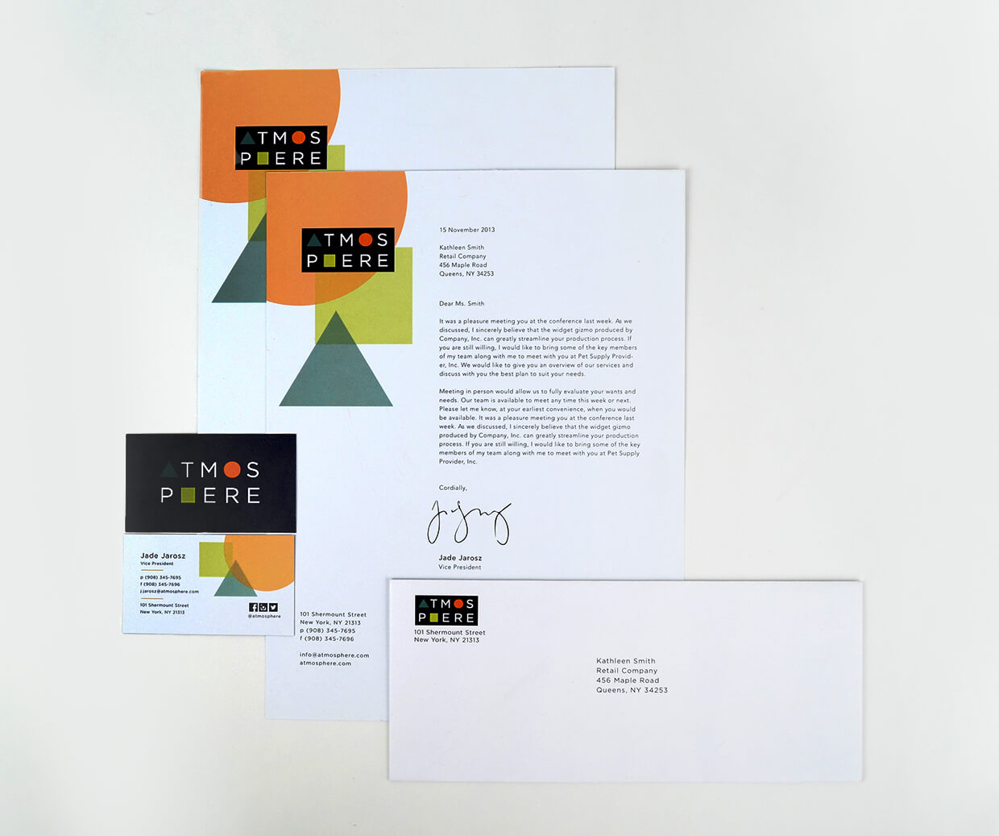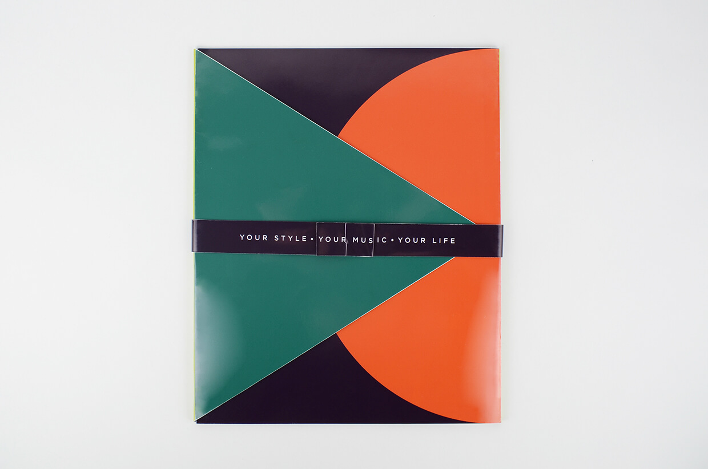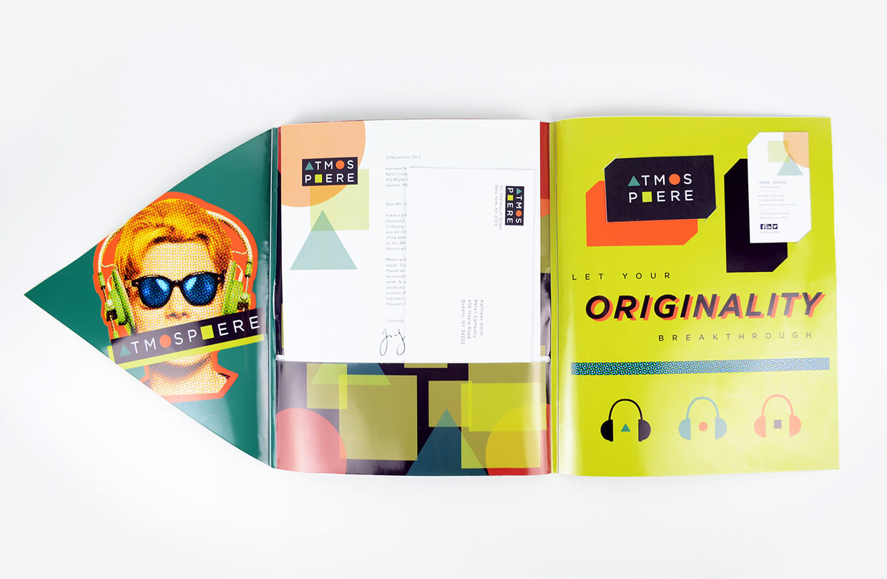
On the Border
On the Border is a chain Mexican Restaurant that I created branding for. I included a fun paisley pattern in the logo to represent the traditional patterns used in Mexico, and I used natural materials to embrace the traditional Mexican culture.
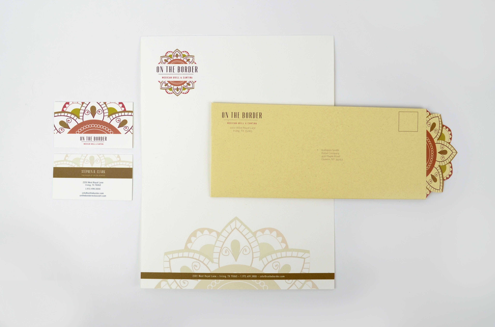
Lily Yeh Artist Catalogue
Lily Yeh is an artist who creates beautiful mosaic murals. She started a non-profit organization with the mission to build a community through art. She involves children in her mural making and shows them how satisfying and fun it is to make art. She is a very humble and kind woman with a loud and creative imagination, this led me to create a colorful book with Lily's artwork shown full bleed. I created a mark for the front cover which is supposed to resemble a flower from one of her murals.
Deep Sea Dinners
This is a marketing app created for a company named Deep Sea Dinners that sells microwavable, pescatarian meals. Throughout this app I used fun illustrations of sea creatures with a clean and modern UI design. The app includes information about the pescatarian diet, what kind of meals they sell, and a survey.
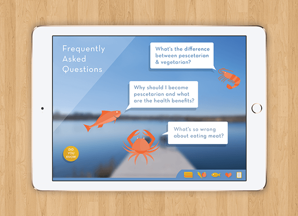
Chess at Three
Chess at 3 is a company that teaches children from 3 years old and up how to play chess. They use fun stories and characters to help children understand the concept of chess. It is proven that when a child learns chess at an early age, it makes them better at problem solving, visual memory, better attention span, and several other improvements. Chess at 3 wanted to create a game set that they can give to children to learn at home that looks really fun and exciting. It includes a storybook, chess pieces, skins for the chess pieces, and a chess game board.
K. Hovnanian Homes®
Four Seasons Website Rebranding
K. Hovnanian Homes® is a home builder in 16 different states across the country. They offer a large variety of home designs, allow building on your own lot, and have retirement communities for adults 55 and older. These retirement communities are called K. Hovnanian's® Four Seasons, the information about these communities live on the main K. Hovnanian Homes® website.
Four Seasons has a different target market than regular K. Hovnanian communities, so these potential customers are only seeing the typical K. Hovnanian messaging that wasn't specific to them. I was tasked with creating branding for these Four Seasons communities and redesign a new webpage that tells a better story and grabs the right user.
In Progress!
Come back later :)
MobileTechCreate
MobileTechCreate is an online publication that contains several articles. By using geometric shapes and a pop of some fun colors, I created a fresh and clean look while keeping the large amounts of information organized.
Onetouch Reveal
Health Care Provider Dashboard
Home Page
Patient List
Patient Report
Care4Today
Health Care Provider Dashboard
Patients List
Patient's Report
Adding a New Patient
"Burst" Font
This font is inspired entirely by the element Sulfur. After researching this element, I found its explosive reactions and demonic myth assoication interesting. I decided I wanted to show the energy of its explosions within each letter.
In Progress!
Come back later :)
Abercrombie & Fitch
Long-Press Feature
While working at Tonic Design, I had the opportunity to work on some new features for both of A&F's brands' retail apps, Abercrombie & Fitch and Hollister Co. The first one was including a long-press functionality within the shopping part of the app. Long-press is when you tap and hold down on a thumbnail or preview-like item for more options or to see more details.
This would allow for a quick-view treatment which would let the user quickly view extra details of a garment without having to click into the product page. The quick-view also allows the user access to some commonly used features like add to bag and save for later.
Long-Press Flow
Add to Bag Flow
On-boarding Animation
Hollister Co.
Long-Press Flow
Add to Bag Flow
On-boarding Animation
Abercrombie & Fitch
User-Generated Content
This second feature involved incorporating user-generated content into both apps. User-generated content is content that users upload that is publicly available, and for companies it's a good marketing tactic to use when they engage their customers on social media. This sort of strategy allows new customers to see voluntary testimonials from current users and to see what trends are popular.
A&F wanted to utilize instagram photos of customers who were having fun in their clothes and to create a feed of these photos within the Abercrombie & Fitch and Hollister Co apps. The user would be able to browse through the feed, tap an image to see it large and shop the clothes that are worn in the photo, and have the ability to upload your own photo.

 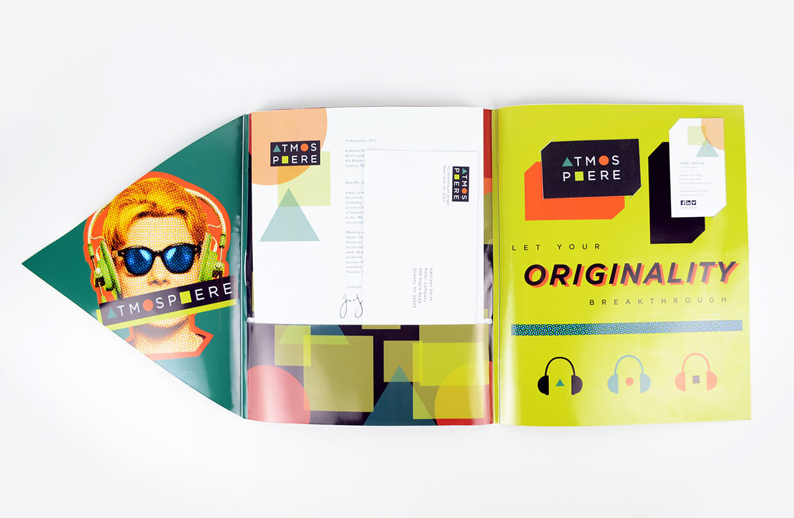
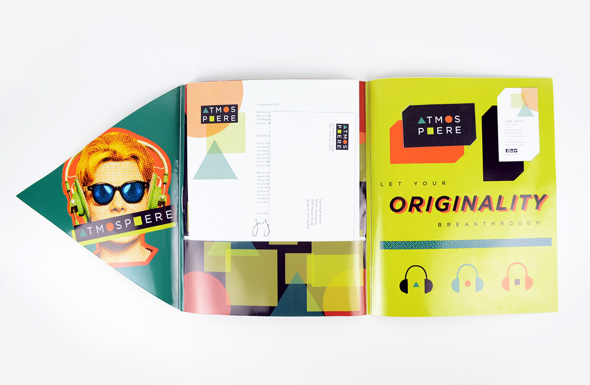
 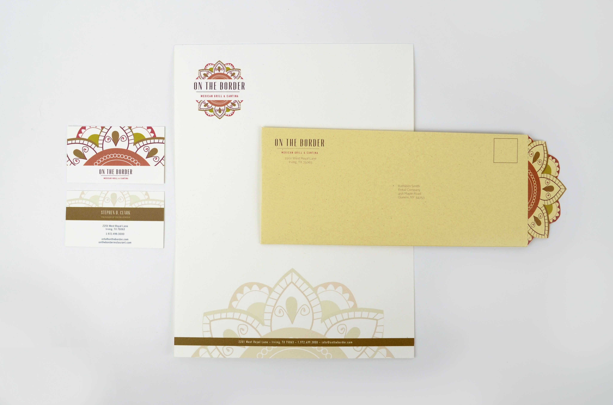
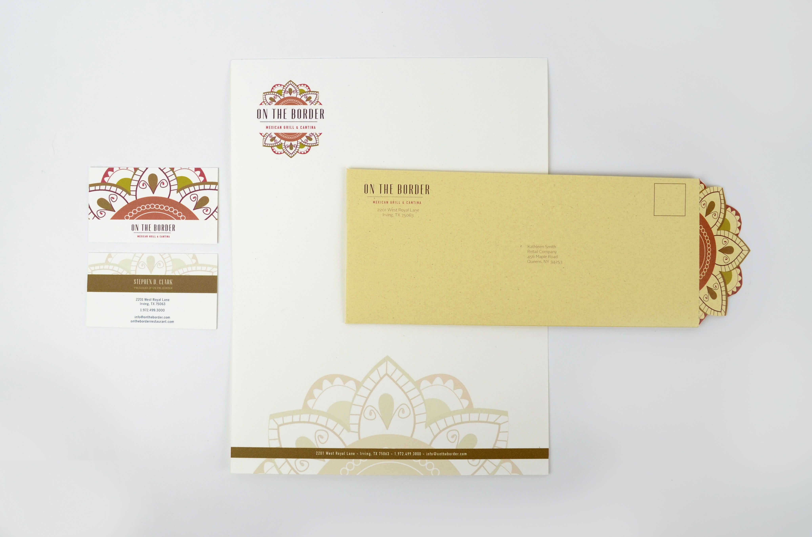


 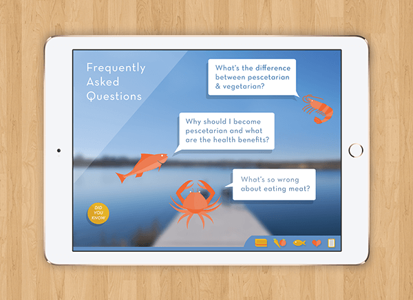
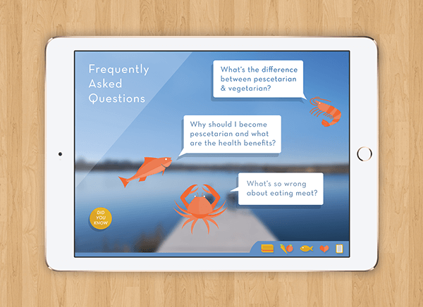

 K. Hovnanian Homes® is a home builder in 16 different states across the country. They offer a large variety of home designs, allow building on your own lot, and have retirement communities for adults 55 and older. These retirement communities are called K. Hovnanian's® Four Seasons, the information about these communities live on the main K. Hovnanian Homes® website.
K. Hovnanian Homes® is a home builder in 16 different states across the country. They offer a large variety of home designs, allow building on your own lot, and have retirement communities for adults 55 and older. These retirement communities are called K. Hovnanian's® Four Seasons, the information about these communities live on the main K. Hovnanian Homes® website.